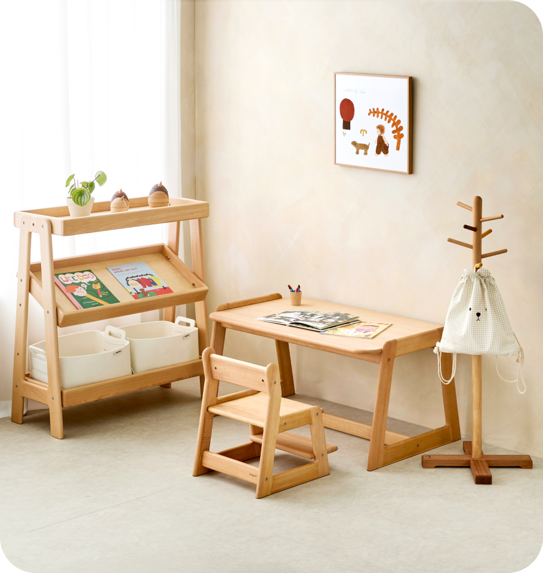

append, appendChild - 추가
innerHTML, innerText, textContent - 내용변경
이곳이 변경됩니다
style.속성 -
style["속성"]
style.setProperty("속성", "값")
style.cssText = "속성:값, 속성:값"
style 가져오기

setAttribute - 속성 가져오기
.속성 = "값" / getAttruibute - 속성 변경하기
classList.add - 클래스 추가
classList.remove - 클래스 제거
classList.toggle - 클래스 추가/제거
classList.contains - 클래스가 있는지 체크
cloneNode - 요소를 복사할때 사용한다
자식의 개수 -
offsetWidth
clientWidth
window.innerWidth
window.outerWidth